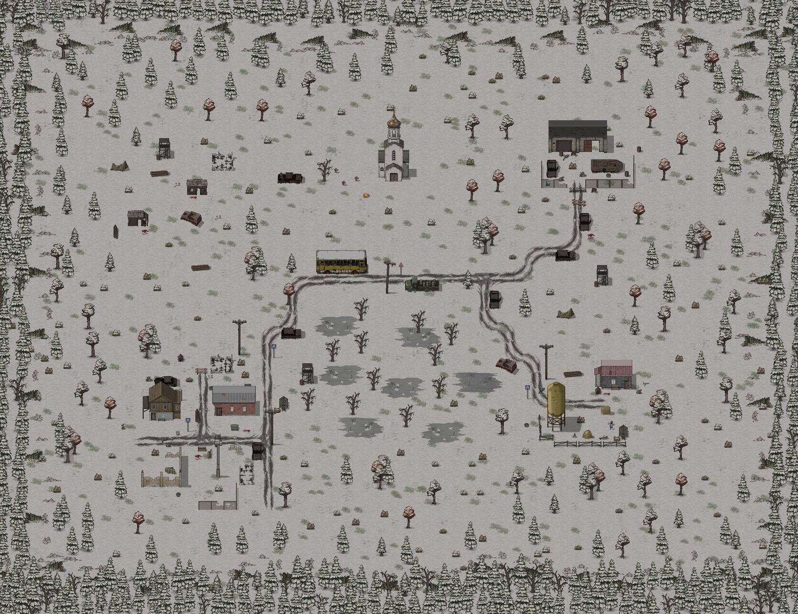

Бери только нужное.
Карманы не бесконечны. Еда, лекарства или запас патронов — решай, что поможет вернуться живым.
ЛУТ И СНАРЯЖЕНИЕХолод снаружи. Последний патрон в кармане.
И целый мир, в котором ещё можно выжить.
Dead Spark — 2D survival-action в заснеженном постапокалиптическом мире. Исследуй опустевшие поселения, ищи припасы и собирай снаряжение. У каждого выхода за порог есть цена.
Карманы не бесконечны. Еда, лекарства или запас патронов — решай, что поможет вернуться живым.
ЛУТ И СНАРЯЖЕНИЕБандиты и волки не дадут расслабиться. Подбирай оружие, устанавливай модули и следи за боеприпасами.
БОЙ И ВЫЖИВАНИЕНаходи материалы, создавай полезные предметы и устанавливай ограждения. Обживай мир шаг за шагом.
КРАФТ И СТРОИТЕЛЬСТВОЗа поворотом может быть укрытие.
А может — причина пожалеть о вылазке.
Выбери отметку и осмотрись.

Отправляйся в путь один или вместе с друзьями. В кооперативе можно исследовать мир, делиться находками и готовиться к следующей вылазке сообща.
Познакомься с миром Dead Spark.
Следующая история выживания — твоя.
Исследование снежного постапокалиптического мира, поиск лута, экипировка, крафт, строительство, выживание и бой. В одиночной игре есть процедурная генерация мира.
Да. В проекте есть LAN-кооператив, браузер серверов и поддержка выделенного сервера. Сетевой мир использует авторскую карту.
Проект разрабатывается для PC и Android. Ссылки на актуальные сборки появятся после их публикации разработчиком.
На этом сайте пока нет опубликованной сборки. Дата релиза и ссылки на скачивание будут добавлены после объявления разработчика.